The Tower — making the first floor playable
Hi everyone! Alongside the Rust client and server, we have been developing The Tower: the original game we want to build on this foundation. Its long-term shape is a floor-by-floor adventure with permanent character growth, preparation and encounters that make use of the world around you.
Live native gameplay — The newer enclosed sanctuary, in the live Rust client.
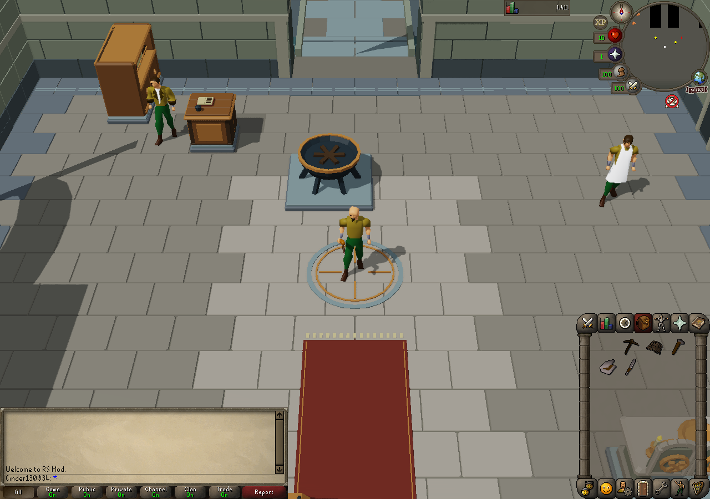
Prepare, repair, then push onward
Floor One is The Cinderworks. The current preparation route connects mining, bronze working, fishing, cooking and an altar offering; restoring the workshop, kitchen and altar opens the way toward the guardians. These captures show working activities in the newer custom-art floor.
Live native gameplay — Copper earned through ordinary mining.
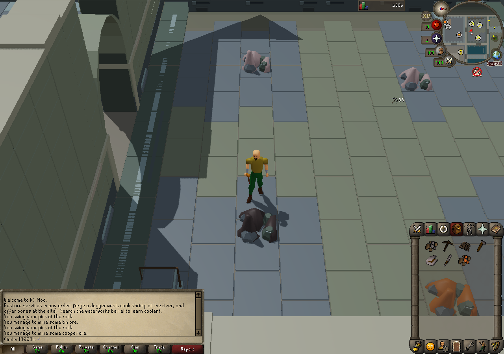
Live native gameplay — Smelting uses the working furnace interface.
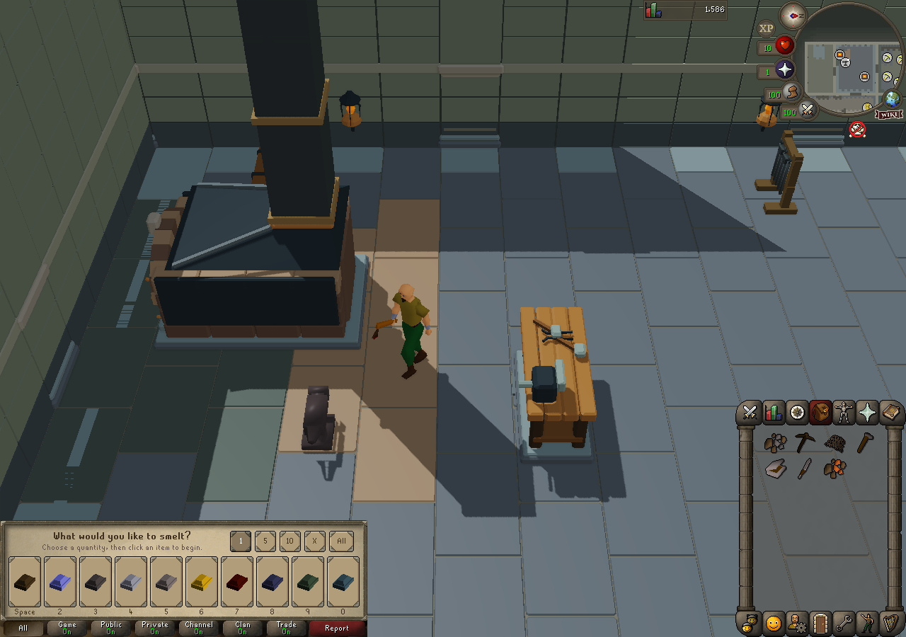
Live native gameplay — The anvil opens the smithing choices during the preparation route.
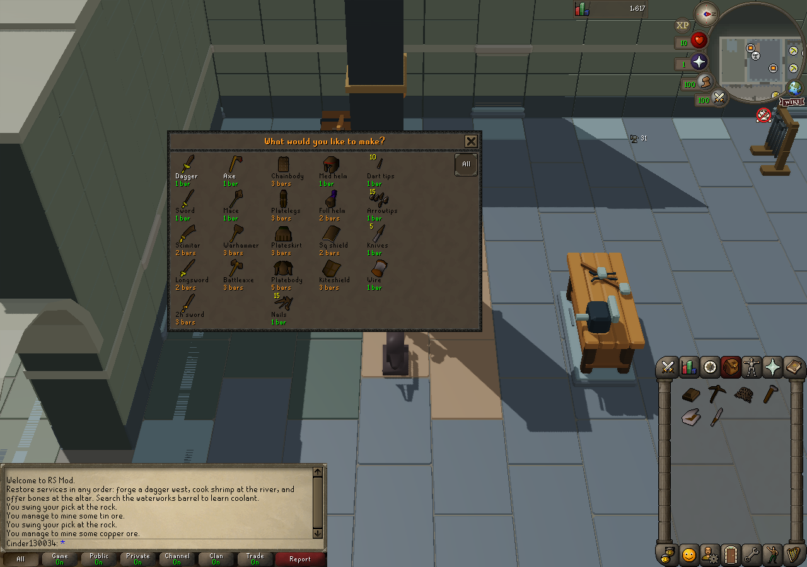
Live native gameplay — Net fishing supplies food for preparation.
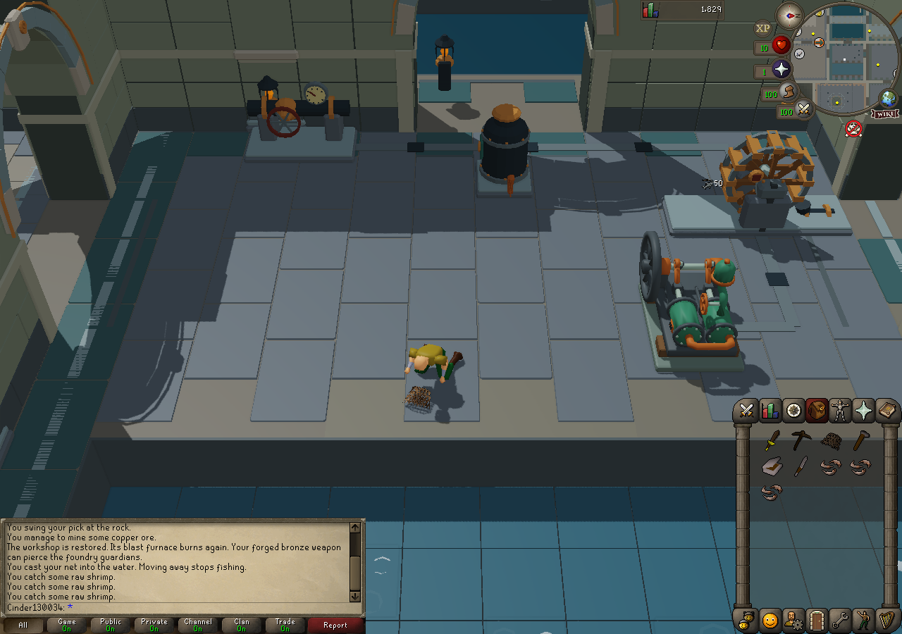
Live native gameplay — Cooking restores the kitchen service.
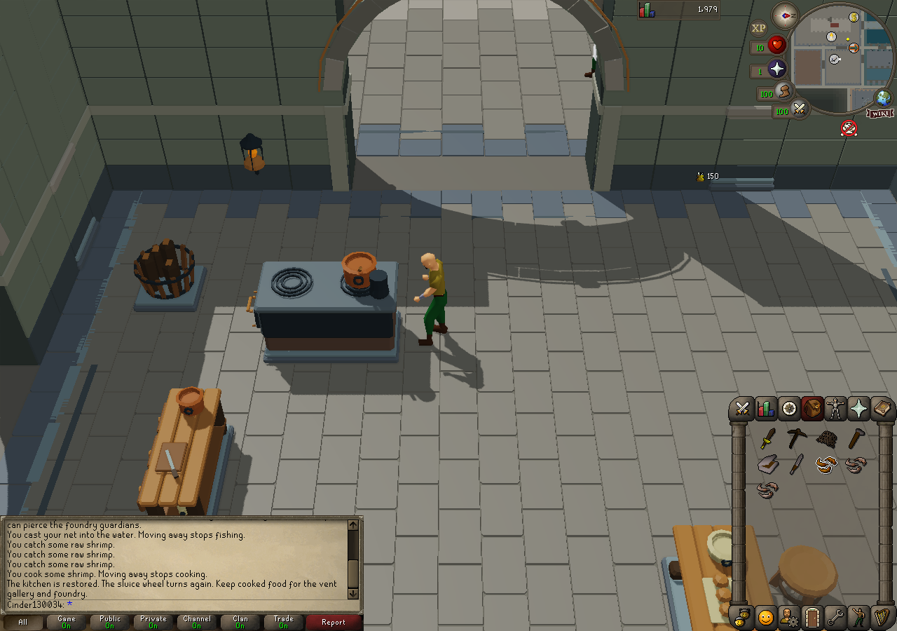
Live native gameplay — Using earned bones restores the altar service.
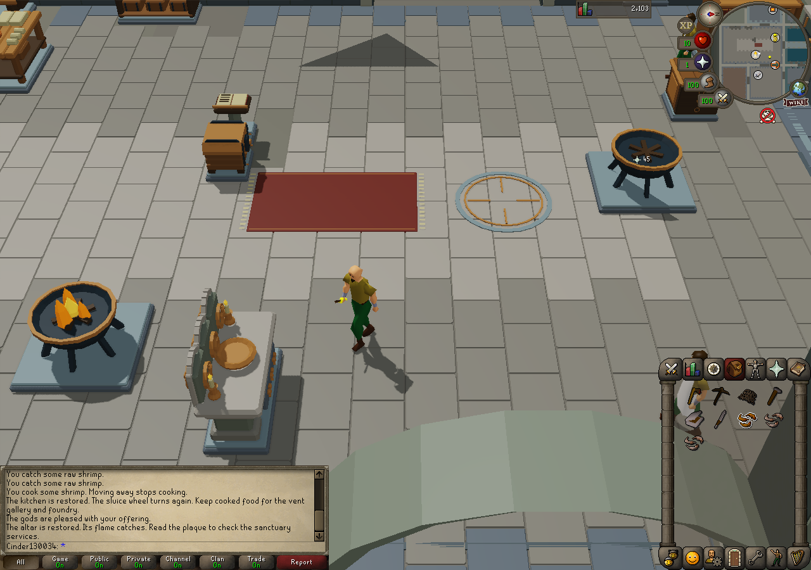
The earlier playable journey
Before the custom-art rebuild, we tested complete earned clears on the earlier floor. These historical captures show its journal, restored services, Ash Imp and Ash Warden; they are not a claim that the rebuilt floor has completed the same acceptance run.
Live native gameplay — Earlier playable floor: the journal and dormant services before preparation.
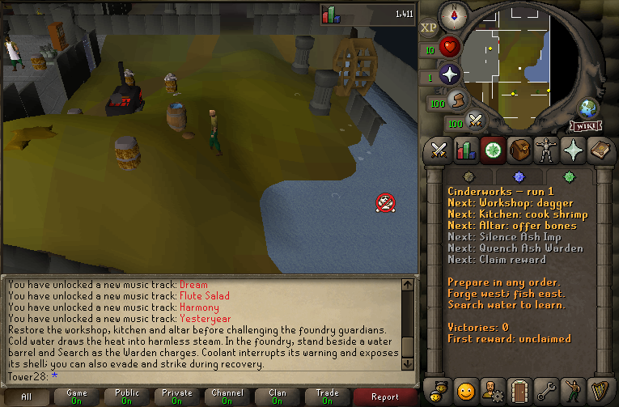
Live native gameplay — Earlier playable floor: workshop service restored; preparation can be completed in different orders.
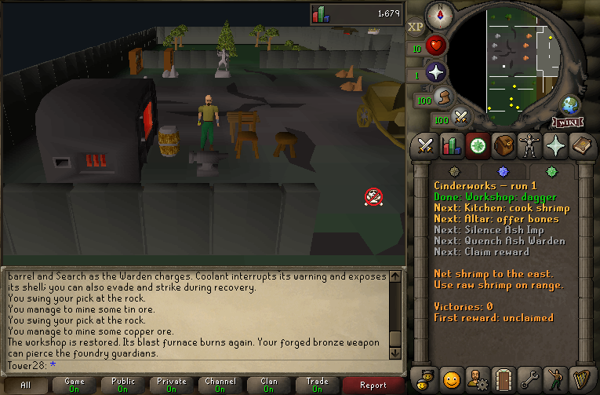
Live native gameplay — Earlier playable floor: the Ash Imp warns with a line of smoke.
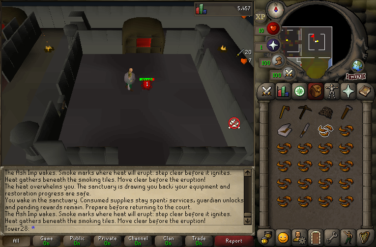
Live native gameplay — Earlier playable floor: the Ash Warden encounter and its smoke telegraph.
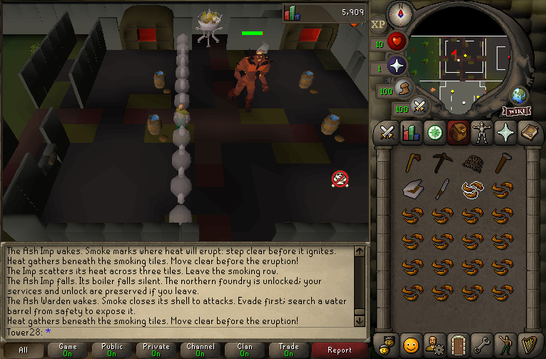
Live native gameplay — Earlier playable floor: coolant clears the charge and exposes the Warden.
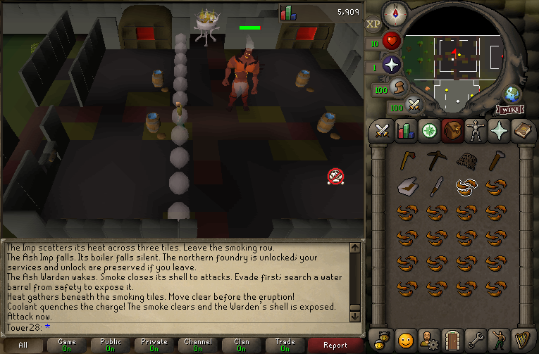
Preparation can be tackled in different orders. In combat, smoke marks danger and a coolant barrel can interrupt the Warden’s charge, giving the player an opening to attack.
Victory, rewards and returning safely
The earlier earned-clear tests cover restoration after victory, a reward that waits for inventory space, and a paid claim that cannot be collected again. Earned skills, items and personal progress survive ordinary reconnects; committed-state restart recovery was also tested.
Live native gameplay — Earlier playable floor: earned victory restores the floor and marks the reward as ready.
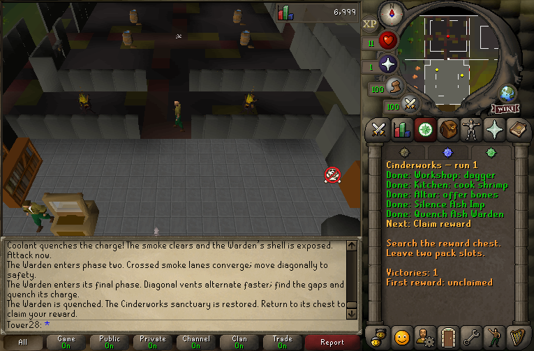
Live native gameplay — Earlier playable floor: the reward waits while the inventory is full.
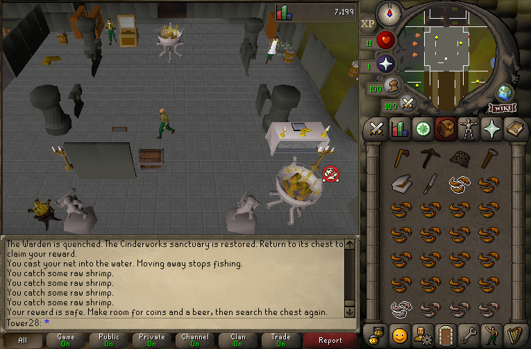
Live native gameplay — Earlier playable floor: the settled journal after reward payment and ordinary reconnect.
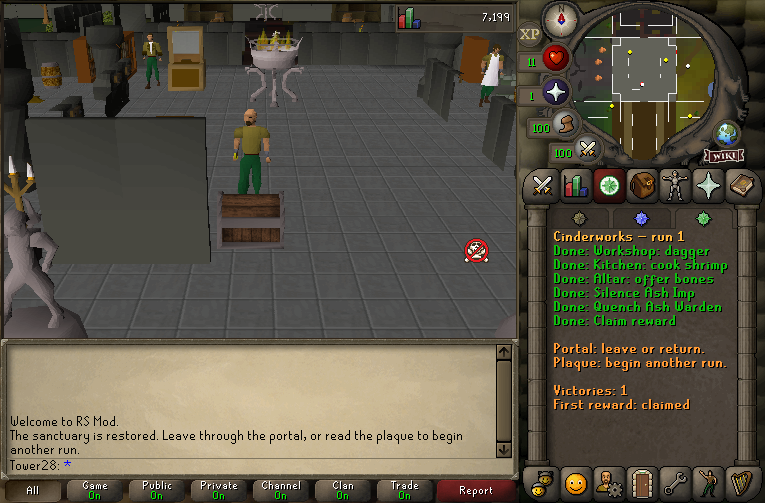
Live native gameplay — Earlier playable floor: a real axe deposited through the bank interface.
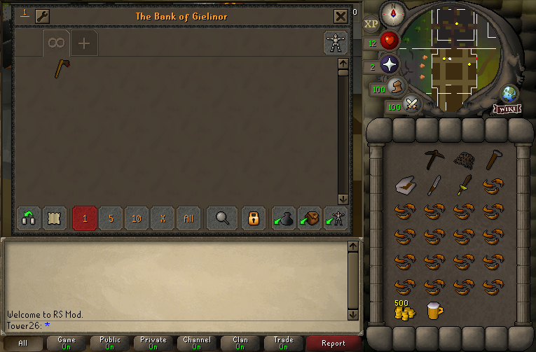
The newer floor already has real hazard recovery and service restoration. Its complete boss-to-reward journey still needs a fresh end-to-end pass.
Live native gameplay — The newer floor: sanctuary recovery after a real hazard defeat.
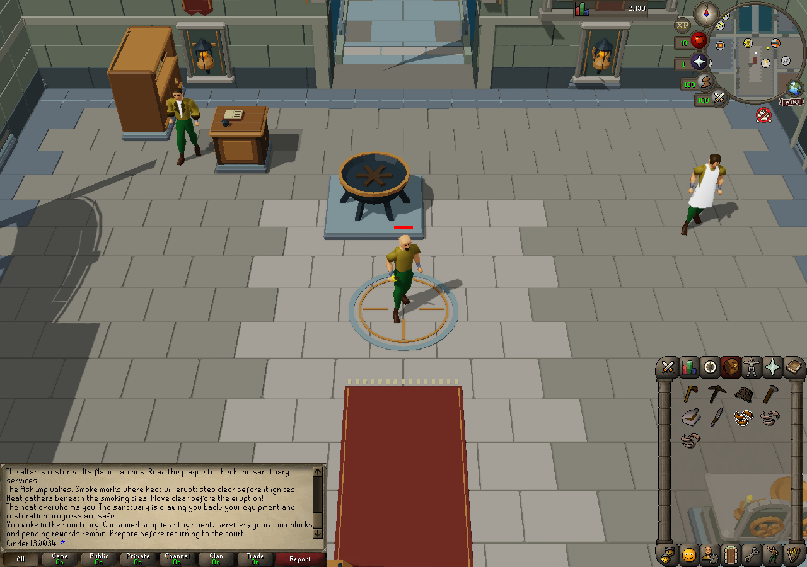
Live native gameplay — The newer floor: a normal waterworks reconnect with the original paving and machinery present.
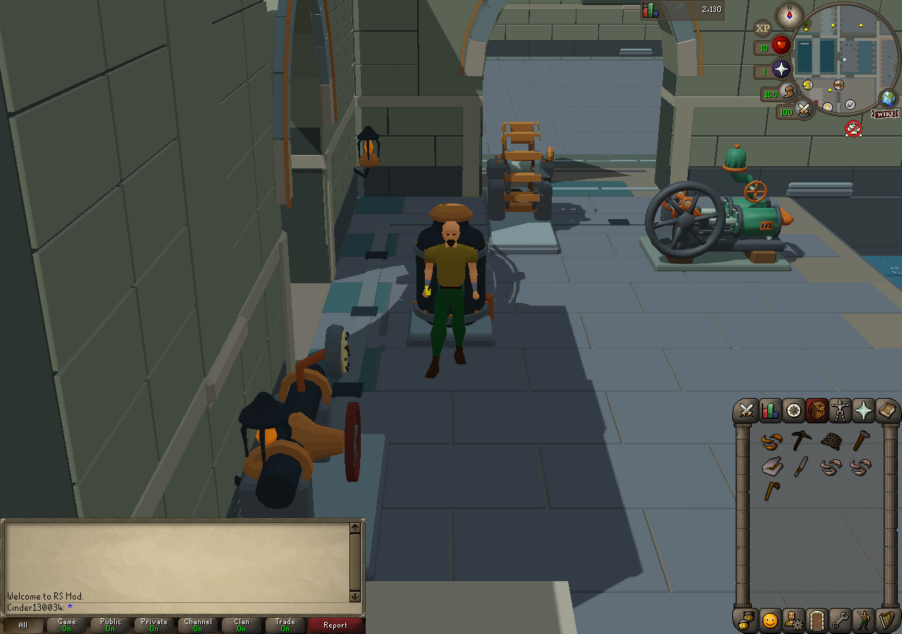
Where this is heading
Permanent skill and character development is the foundation for the longer ascent. More floors, broader progression rewards and group modes are future work; the current shared floor tracks personal progress and encounter ownership. We are still refining pacing, performance and the visual design, and regular-tree gathering remains unfinished in the newest setup.
Thanks for taking a look — feedback on how clearly the preparation and encounter loop reads would be useful.
Development captures from isolated Rust client/server sessions. RuneScape / OSRS and the depicted authentic assets belong to Jagex; this project is unofficial and unaffiliated.